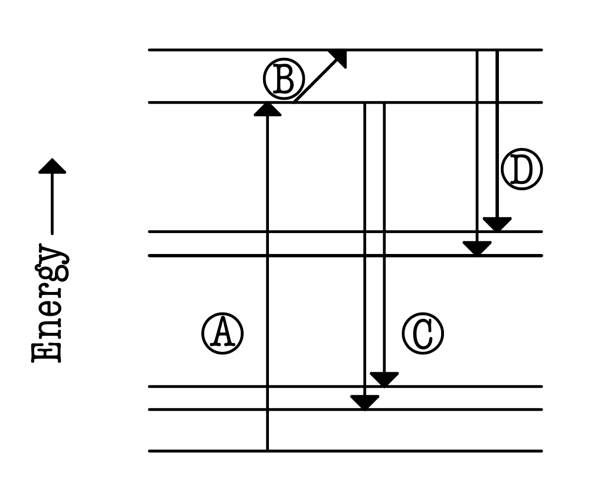
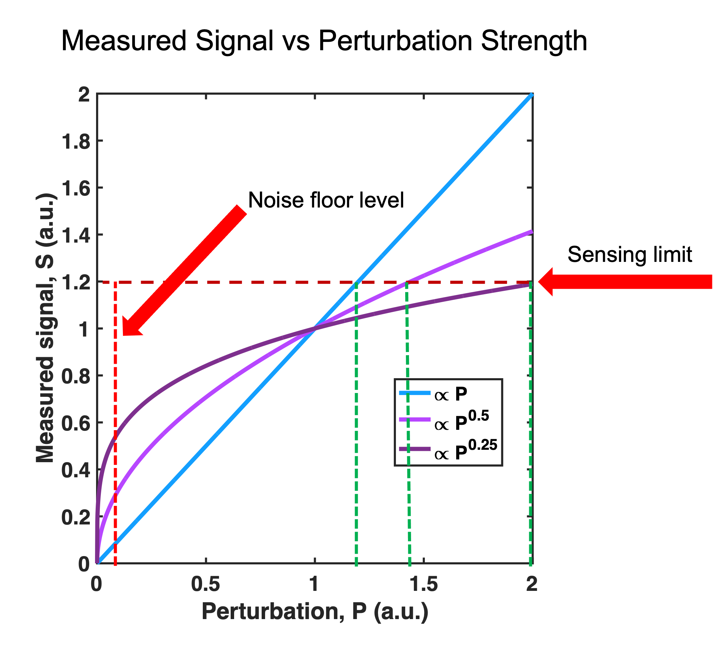

The Stewart group studies the dynamics of atom-diatom collisions both computationally and experimentally. While all atomic interactions are inherently quantum, the Li2(A1Σu+)-rare gas systems we study are highly classical, so we can extract valuable information from classical treatment in addition to our exact quantum mechanical calculations. Our group has the ability to study detailed classical trajectories, run computationally expensive quantum calculations on Wesleyan's high performance computing center (HPCC), and analyze experimental collision data when we study a given system. This threefold method of investigation allows the group to be rather thorough in our work.
Our group primarily uses a classical trajectory program written in by Dr. Neil Smith to study collisions in a quasi-classical manner. The program makes use of action angle variables, which have been shown to significantly reduce computational time and allows us to trivially determine the final rovibronic states (denoted by the vibrational and rotational quantum numbers v and j ) of our molecules. We use a modified harmonic oscillator to model the diatomic interaction and have an array of choices for the modeling of collisions. The most common way we model our collision system is with an ab initio potential surface (one that is calculated from the principles of quantum mechanics) because they strongly agree with experimental results. With Dr. Smith's program and our suite of analysis tools, we have been able to gain many insights into the dyanmics of the collisions of small molecules. Additionally, a cool feature of the trajectory program is the ability to make "collision movies" where one can see what a given interaction looks like classically. A screenshot taken from a Li2(A1Σu+)-Xe collision movie is shown above.
Our group uses a dispersed laser induced fluorescence procedure to determine absolute level-to-level rate coefficients. First, we use a continuous-wave single-frequency laser to prepare the molecules into a single electronically excited rovibrational state (a specific vi , ji combination). Then we examine the resulting spectrum, which consists of strong "parent lines" from the fluorescence of molecules from the laser-excited state and weaker "satellite lines" from the fluorescence of molecules that were laser-excited and subsequently excited via a collision. We then use the data from the experimentally determined parent and satellite line intensities in calculating our level-resolved rate constants.
The figure above has been adapted from one created by Dr. Stewart and is a helpful tool in visualizing our experimental procedure. Transition (A) shows the laser exciting molecules into their first electronic excited state. From that point the molecules that do not undergo a collision while excited fluoresce (parent lines) to another level of the ground state (C). Those that do undergo a collision are raised to a higher excited state (B) and then fluoresce (satellite lines) to a different level of the ground state (D).
Part of my initial training once joining the lab consisted of assisting our lab's graduate student, Denuwan Vithanage, thermally stabilize our etalon. The group's laser previously had long-term stability issues, but when Denuwan still observed a frequency drift after attempts to stabilize the laser, he decided it would be best to investigate our measurement apparatus. I then helped him conduct temperature measurements and insulate our etalon. In short time, it was seen that our laser was stable.
My subsequent task was to characterize our group's CCD camera, which outputs the molecular spectra that we analyze to extract rate constants. The camera, like all other detection apparatuses, innately outputs noise. My job was to attain a better understanding of how the camera works and develop a stretegy to adjust our data taking procedure to enhance our signal to noise ratio. After both of those tasks were completed, the group was able to move on with confidence to pursue Denuwan's benchmark experiments on microscopic reversibility.
There exist two mechanisms of vibrational energy transfer in atom-diatom collision systems. The first is called the end impact mechanism. These collisions involve the incoming atom striking an end of the diatom, inducing a compression that in turn vibrationally excites the diatom. This mechanism is well-known and is the standard way of modelling vibrational energy transfer in our systems. The second mechanism is the side impact; these collisions involve the projectile atom colliding with the diatom on a trajectory that is nearly perpendicular to the diatomic bond. This perpendicular strike excites molecular vibration by expanding the diatomic bond. The side impact mechanism is significantly less well-known than the end impact, and my MA work will aid in shrinking this knowldge gap by characterizing the side impact mechanism.
This work will be both computational and experimental. Computational work will range from analyzing the results of Monte Carlo simulations of millions of classical trajectories to studying single collisions. Analysis from the computational work will not only provide dynamical insights but also guidance on which systems we should experimentally investigate. While our group has previously published experimental evidence for the significance of the side impact mechanism, this work aims to substantially strengthen that evidence and provide benchmark experimental results in the study of the side impact mechanism. One of the applications of this work is modeling energy flow in out-of-equilibrium gases. Some interesting cases of such gases are those excited by the shockwaves from supersonic flight and atmospheric entry of a spacecraft. A more complete understanding of those systems is especially vital to organizations like NASA, which has previously supported our group's work.
Link to "Equatorial impacts in atom-diatom vibrational energy transfer" poster
My first task at ORNL was to conduct a literature search for and draft sections of a paper (work remains unpublished) regarding the optical transparency of graphene in the vacuum ultraviolet regime (VUV). The group investigated this topic to evalute graphene's potential to be used as a low-cost VUV photodetector. The group is interested in the VUV wavelengths because scintillators based on liquid noble gases are commonly used for detection in particle physics experiments, and liquified noble gases scintillate in the VUV regime. Such experiments include but are not limited to neutrino physics, neutrinoless double beta decay, and dark matter searches. There are multiple ways to detect VUV photons in these experiments, but with the increasing scales of these experiments it is becoming increasingly expensive to do so directly (without using a wavelength shifter). Many of the proposed low-cost designs use a planar photodiode configuration where an NP junction lies between two electrodes. In order to detect VUV photons, one of the electrodes must be transparent to VUV light. Graphene is known to be nealry transparent (a single layer is ~98% transparent) in the visible regime, but since liquid argon scintillates at 128nm, which is well below the lower wavelength cutoff for visible light, further study was needed to determine graphene's VUV transparency. The group examined the optical transparency of single and multi-layer graphene in the range of 115 to 350nm, and the results were promising for graphene's use as a low-cost VUV photodetector.
The next project I worked on was the assembly of 3D-printed scintillation detectors. My work began with a study of a model adhesive (one with similar properties to the proposed adhesive). The investigation yielded sufficient data to configure the settings of the adhesive dispenser that was ultimately used in the assembly process. I then determined the most efficient and material-conserving workflow for the fabrication procedure. Following the conclusing of my work the process became successfully fully automated with an arduino-controlled adhesive dispenser and a robotic arm to carry out the assembly.
My final project at ORNL involved calibrating stilbene radiation detectors for use in a nuclear physics experiment at the University of Notre Dame. These detectors have an array of applications from research to nuclear nonproliferation. Crystalline stilbene is an organic scintillator that is highly sensitive to fast neutrons (those with a kinetic energy above 1 MeV) in a gamma ray background. The stilbene detectors used in this experiment only made up a subset of the suite of instruments that were used for data collection, which also included gamma ray and charged particle detectors. The stilbene detectors, all of which were coupled to photomultiplier tubes (PMTs), can be seen above my head in the picture on my homepage. Since the experimental procedure involved collecting data at different energy levels, the detectors needed to be calibrated such that that they didn't saturate at the higher energies or have too low of a signal to noise ratio at lower energies. In order to avoid both of these potential shortcomings, the plan was to change the voltages of the detectors as the energy changed in order to extract the highest quality data possible. A Cs-137 radiation source was used to generate pulse height spectra for each detector at varying voltage settings. This calibration data provided us sufficient information to calculate the optimal voltages for each detector for each energy studied in the experiment.
While part of Dr. Kottos's group, my project focused on sublinear sensing. Most sensors are linear in that their response signal is directly proportional to the input perturbation. We see in the figure below that if one wanted to construct a linear sensor that was especially sensitive to small perturbations, then they would have to significantly reduce the sensor's dyanmic range (the ratio of the maximum and minimum perturbations that a sensor can measure). However, it is demonstrated that if the sensor has a sublinear response, then it will have an expanded dynamic range and augmented sensitivity to small perturbations in comparison to a linear sensor. From this, one can clearly see the advantages that come with a nonlinear sensing device.
The method we used to realize such a scheme was to implement a setup based on Wigner's Cusp Anomalies (WCAs). These cusps are characterized by an output variable that is proportional to the square root of its input variable. WCAs are more formally defined as square-root singularites in the differential scattering cross section around the energy threshold of a newly opened channel. While they were first studied in the context of nuclear physics, WCAs also manifest themselves in other settings such as quantum mechanics, optics, and photonics. Our work showed that these cusps can be used in more than isolation: we demonstrated setups that exhibited two-sided cusps as well as systems with multiple unique cusps. Two-sided cusps are especially advantageous as they are hyper-sensitive in both the positive and negaitve directions, making them ideal for sensing observables such as acceleration or rotation. Setups with multiple cusps are characteristic of multimode systems; they allow for simultaneous, enhanced sensing of multiple independent observables.
As part of our theoretical study, we conducted both numerical simulations and COMSOL Multiphysics simulations. Results of each of the simulations are included in the poster I produced for the project. I encourage you to view the poster and accompanying overview video for more information on this project (both can be seen below). For more information on Dr. Kottos's group you can visit their website here.